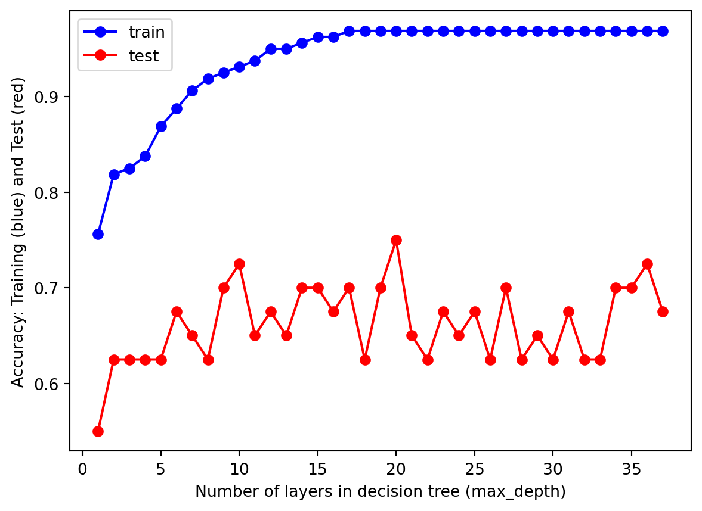
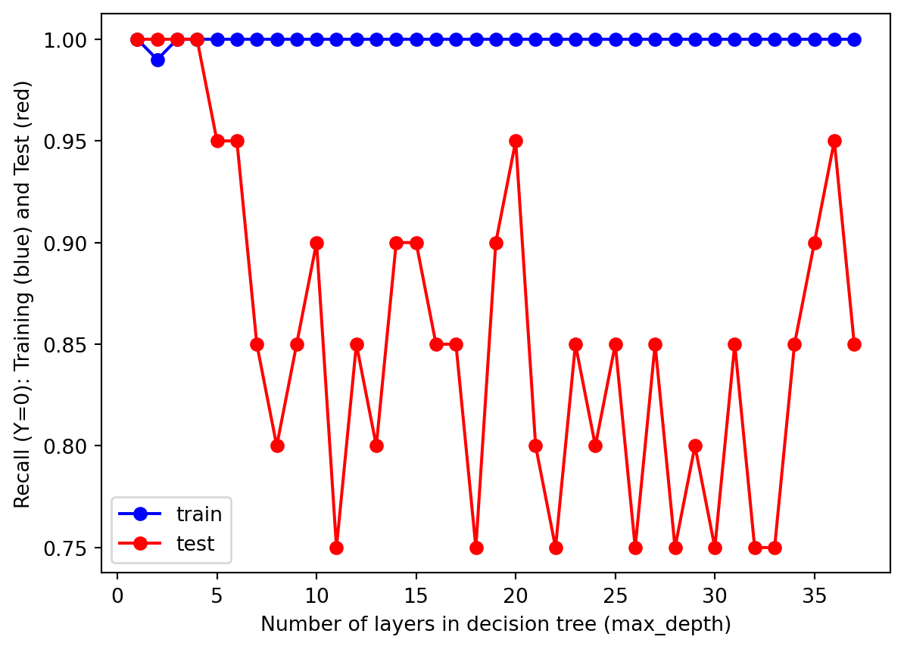
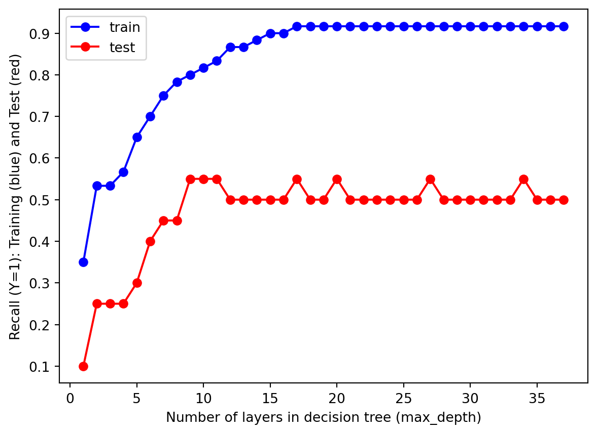
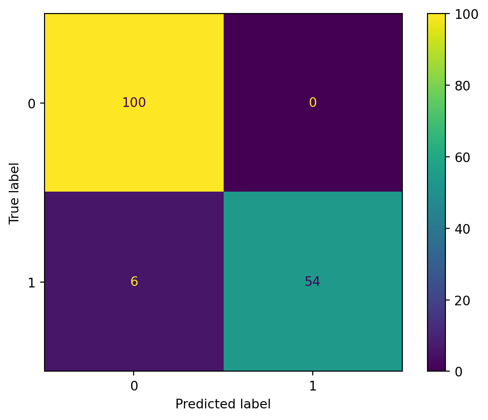
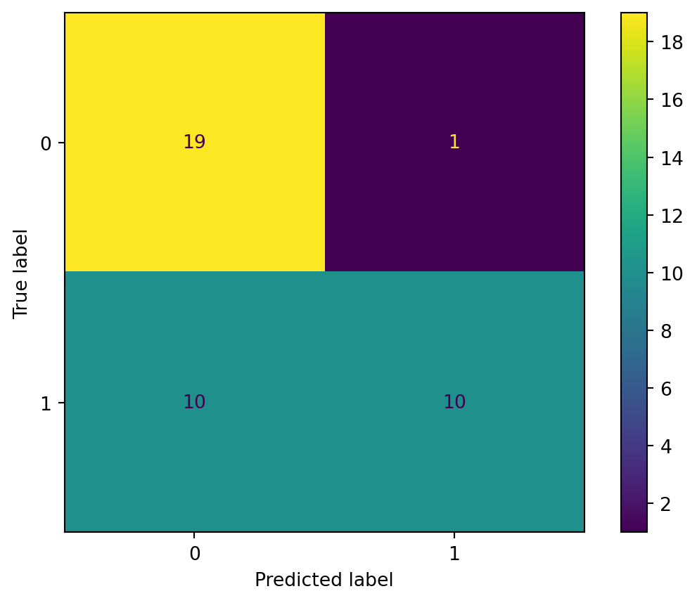
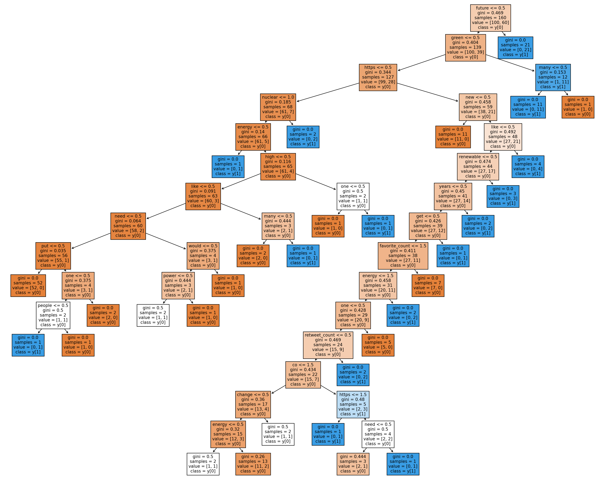

import pandas as pd
import seaborn as sns
import matplotlib.pyplot as plt
from sklearn import tree
from IPython.display import Image
import numpy as np
from sklearn.metrics import accuracy_score
from sklearn.metrics import precision_score
from sklearn.metrics import recall_score
from collections import Counter
from sklearn.metrics import precision_recall_fscore_support
from sklearn.feature_extraction.text import CountVectorizer
from sklearn.metrics import confusion_matrix,accuracy_score,precision_score, recall_score, ConfusionMatrixDisplayMethods
Decision Tree is a machine learning classification method. Because it is a tree structure, it is called a decision tree. Each internal node makes an attribute judgment once, each branch represents the output of the judgment result, and finally, each leaf node represents the classification result.
The following figure shows a typical example of a decision tree.

From the example, we can see that the decision tree has a good visualization effect and can be clearly accepted and understood by people. Secondly, decision tree can process not only classified data but also record data, while most other methods can only deal with single variable data. Finally, decision trees can deal with multiple output problems. These are the advantages of decision trees.
Decision trees also have some disadvantages, such as being prone to overfitting. In addition, decision trees are not particularly stable because subtle changes in the data can lead to completely different “branches” being generated.
Class Distribution
df = pd.read_csv("../../data/cleaning data/twitter_data_clean.csv")
df.rename({"Whether the relevant": "relevance"}, axis =1, inplace = True)df.head()| text | favorite_count | retweet_count | created_at | relevance | |
|---|---|---|---|---|---|
| 0 | thinking people care covid anymore internet in... | 0 | 0 | Wed Sep 28 02:06:21 +0000 2022 | 0 |
| 1 | Mitsubishi Electric high wall heat pump offers... | 0 | 0 | Wed Sep 28 02:05:10 +0000 2022 | 1 |
| 2 | buzzing energy right Today amazing day made ma... | 2 | 0 | Wed Sep 28 02:03:24 +0000 2022 | 0 |
| 3 | One thing tell someone struggling pay energy s... | 0 | 0 | Wed Sep 28 02:03:14 +0000 2022 | 0 |
| 4 | Happy Libra New Moon energy one nice little ki... | 0 | 0 | Wed Sep 28 02:03:02 +0000 2022 | 0 |
Transforming into record data using CountVectorizer. This will convert our text into words with frequency.
vectorizer = CountVectorizer()
vectorizer.fit(df["text"])
temp = vectorizer.transform(df["text"])
bag_of_words = pd.DataFrame(temp.toarray(), columns = vectorizer.get_feature_names())C:\Users\Yifan\anaconda3\envs\ANLY501\lib\site-packages\sklearn\utils\deprecation.py:87: FutureWarning:
Function get_feature_names is deprecated; get_feature_names is deprecated in 1.0 and will be removed in 1.2. Please use get_feature_names_out instead.
bag_of_words.shape(200, 1947)df = pd.concat([bag_of_words,df], axis =1)df.drop(columns=["text","created_at"], inplace = True)
df.head()| abdulaziz | able | ableism | abolishing | absorbing | academy | accept | access | accidently | account | ... | zh | zichal | zj | znbgk | zoa | zodiac | zplmaegx | favorite_count | retweet_count | relevance | |
|---|---|---|---|---|---|---|---|---|---|---|---|---|---|---|---|---|---|---|---|---|---|
| 0 | 0 | 0 | 1 | 0 | 0 | 0 | 0 | 0 | 0 | 0 | ... | 0 | 0 | 0 | 0 | 0 | 0 | 0 | 0 | 0 | 0 |
| 1 | 0 | 0 | 0 | 0 | 0 | 0 | 0 | 0 | 0 | 0 | ... | 0 | 0 | 0 | 0 | 0 | 0 | 0 | 0 | 0 | 1 |
| 2 | 0 | 0 | 0 | 0 | 0 | 0 | 0 | 0 | 0 | 0 | ... | 0 | 0 | 0 | 0 | 0 | 0 | 0 | 2 | 0 | 0 |
| 3 | 0 | 0 | 0 | 0 | 0 | 0 | 0 | 0 | 0 | 0 | ... | 0 | 0 | 0 | 0 | 0 | 0 | 0 | 0 | 0 | 0 |
| 4 | 0 | 0 | 0 | 0 | 0 | 0 | 0 | 0 | 0 | 0 | ... | 0 | 0 | 0 | 0 | 0 | 0 | 0 | 0 | 0 | 0 |
5 rows × 1949 columns
print("shape of the vectorized data", df.shape)shape of the vectorized data (200, 1949)num_0 = df["relevance"].value_counts()[0]
num_1 = df["relevance"].value_counts()[1]
print("Number of points with target=0:", num_0, num_0/(num_0+num_1)*100, "%")
print("Number of points with target=1:", num_1, num_1/(num_0+num_1)*100, "%")Number of points with target=0: 120 60.0 %
Number of points with target=1: 80 40.0 %We use vectorizer to convert text data into numerical values for processing.
baseline model for comparison
## RANDOM CLASSIFIER
def random_classifier(y_data):
ypred=[];
max_label=np.max(y_data); #print(max_label)
for i in range(0,len(y_data)):
ypred.append(int(np.floor((max_label+1)*np.random.uniform(0,1))))
print("-----RANDOM CLASSIFIER-----")
print("count of prediction:",Counter(ypred).values()) # counts the elements' frequency
print("probability of prediction:",np.fromiter(Counter(ypred).values(), dtype=float)/len(y_data)) # counts the elements' frequency
print("accuracy",accuracy_score(y_data, ypred))
print("percision, recall, fscore,",precision_recall_fscore_support(y_data, ypred))random_classifier(df["relevance"])-----RANDOM CLASSIFIER-----
count of prediction: dict_values([101, 99])
probability of prediction: [0.505 0.495]
accuracy 0.515
percision, recall, fscore, (array([0.61616162, 0.41584158]), array([0.50833333, 0.525 ]), array([0.55707763, 0.4640884 ]), array([120, 80], dtype=int64))Feature Selection
https://scikit-learn.org/stable/modules/feature_selection.html#feature-selection
X = df.loc[:, df.columns !="relevance"]
Y = df["relevance"]Removing the low variance columns since our dataset distribution is close to balanced. Threshold = 0.05.
from sklearn.feature_selection import VarianceThreshold
sel = VarianceThreshold(threshold=(.05))
chosen_x = sel.fit_transform(X)print("we have following features left after removing los variance words:",chosen_x.shape[1])
concol = sel.get_feature_names_out()
print(concol)
X = pd.DataFrame(chosen_x, columns = concol)we have following features left after removing los variance words: 38
['although' 'amp' 'billion' 'change' 'co' 'day' 'dojo' 'energy' 'future'
'get' 'good' 'green' 'high' 'https' 'inflation' 'life' 'like' 'many'
'mars' 'need' 'needs' 'new' 'nuclear' 'one' 'people' 'power' 'put' 'rare'
'renewable' 'see' 'still' 'think' 'time' 'world' 'would' 'years'
'favorite_count' 'retweet_count']Spliting Data Set
x_train = X.sample(frac=0.8, axis=0)
x_test = X.drop(x_train.index)
y_train = Y.iloc[x_train.index]
y_test = Y.drop(x_train.index)We ended up with 38 words as our features by removing some of the distracting words.
Model Tuning
Carry out, document, and visualize a hyper-parameter tuning protocol. Attempt to find the set of hyper parameters that result int the optimal model (i.e. lowest training error without overfitting, validation and training error should be similar)
test_results=[]
train_results=[]
for num_layer in range(1,len(concol)):
model = tree.DecisionTreeClassifier(max_depth=num_layer)
model = model.fit(x_train,y_train)
yp_train=model.predict(x_train)
yp_test=model.predict(x_test)
# print(y_pred.shape)
test_results.append([num_layer,accuracy_score(y_test, yp_test),recall_score(y_test, yp_test,pos_label=0),recall_score(y_test, yp_test,pos_label=1)])
train_results.append([num_layer,accuracy_score(y_train, yp_train),recall_score(y_train, yp_train,pos_label=0),recall_score(y_train, yp_train,pos_label=1)])test_results = np.array(test_results)
train_results = np.array(train_results)fig = plt.figure()
ax1 = fig.add_subplot(111)
ax1.plot(range(1,len(concol)),train_results[:,1], c="b", marker='o',label = "train" )
ax1.plot(range(1,len(concol)),test_results[:,1], c="r", marker='o',label = "test" )
plt.xlabel("Number of layers in decision tree (max_depth)")
plt.ylabel("Accuracy: Training (blue) and Test (red)")
plt.legend()
plt.show()
fig = plt.figure()
ax1 = fig.add_subplot(111)
ax1.plot(range(1,len(concol)),train_results[:,2], c="b", marker='o',label = "train" )
ax1.plot(range(1,len(concol)),test_results[:,2], c="r", marker='o',label = "test" )
plt.xlabel("Number of layers in decision tree (max_depth)")
plt.ylabel("Recall (Y=0): Training (blue) and Test (red)")
plt.legend()
plt.show()
fig = plt.figure()
ax3 = fig.add_subplot(111)
ax3.plot(range(1,len(concol)),train_results[:,3], c="b", marker='o',label = "train" )
ax3.plot(range(1,len(concol)),test_results[:,3], c="r", marker='o',label = "test" )
plt.xlabel("Number of layers in decision tree (max_depth)")
plt.ylabel("Recall (Y=1): Training (blue) and Test (red)")
plt.legend()
plt.show()


As we can see, we choose our parameter of the tree around 15
Final Results
Report, discuss, and visualize the results of the final optimally-fit model. For example, final training & validation errors, confusion matrices (values and plots), plots of the decision tree, etc. Comment on the quality of fit, why it might be good or bad, and what might be done to improve it.
Type Markdown and LaTeX: 𝛼2
def confusion_plot(y_data,y_pred):
print("ACCURACY:",accuracy_score(y_data, y_pred) )
print("NEGATIVE RECALL (Y=0):", recall_score(y_data, y_pred, pos_label= 0))
print("NEGATIVE PRECISION (Y=0):", precision_score(y_data, y_pred, pos_label= 0))
print("POSITIVE RECALL (Y=1):", recall_score(y_data, y_pred, pos_label= 1))
print("POSITIVE PRECISION (Y=1):", precision_score(y_data, y_pred, pos_label= 1))
cm = confusion_matrix(y_data, y_pred, labels=model.classes_)
disp = ConfusionMatrixDisplay(confusion_matrix=cm,display_labels=model.classes_)
print(cm)
disp.plot()
plt.show()# Using the parameter of 15
depth = 15
model = tree.DecisionTreeClassifier(max_depth=depth)
model = model.fit(x_train,y_train)
yp_train=model.predict(x_train)
yp_test=model.predict(x_test)
print("------TRAINING------")
confusion_plot(y_train,yp_train)
print("------TEST------")
confusion_plot(y_test,yp_test)------TRAINING------
ACCURACY: 0.9625
NEGATIVE RECALL (Y=0): 1.0
NEGATIVE PRECISION (Y=0): 0.9433962264150944
POSITIVE RECALL (Y=1): 0.9
POSITIVE PRECISION (Y=1): 1.0
[[100 0]
[ 6 54]]
------TEST------
ACCURACY: 0.725
NEGATIVE RECALL (Y=0): 0.95
NEGATIVE PRECISION (Y=0): 0.6551724137931034
POSITIVE RECALL (Y=1): 0.5
POSITIVE PRECISION (Y=1): 0.9090909090909091
[[19 1]
[10 10]]
def plot_tree(model,X,Y):
fig = plt.figure(figsize=(25,20))
tree.plot_tree(model, feature_names=X.columns,class_names= True,
filled=True)
fig.show()
plot_tree(model,X,Y)C:\Users\Yifan\AppData\Local\Temp\ipykernel_15596\1721701057.py:5: UserWarning:
Matplotlib is currently using module://matplotlib_inline.backend_inline, which is a non-GUI backend, so cannot show the figure.

We generated the final decision tree model, which looks good, and the accuracy of the training part is very high. However, in contrast, the accuracy of the test section does not exceed 0.7, so it needs to be improved.
Conclusion
It can be seen from the final results that the decision tree has a good response to this problem. Because of its high overall accuracy, it can distinguish most samples. However, because we use words, some classification criteria may be too redundant, which leads to relatively complex decision trees and some overfitting phenomena. However, all models are not perfect, including decision trees, naive bayes, SVM and so on. In the future, we can use more other models, such as random forest, to fit, compare and summarize the same data, which may get better and more appropriate results.